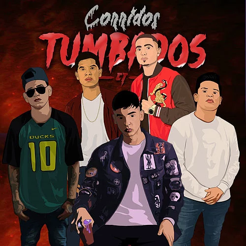

Los corridos tumbados, son una mezcla de otros estilos musicales del regional mexicano y la música urbana, se originaron a mediados de los años 2010 en varias ciudades cercanas a la frontera entre Estados Unidos y México1. El mexicano Natanael Cano19, es considerado el pionero del termino, pues fue él, quien en 2019 se mudó a Los Ángeles y popularizó esta música entre la comunidad mexicanoestadounidense
